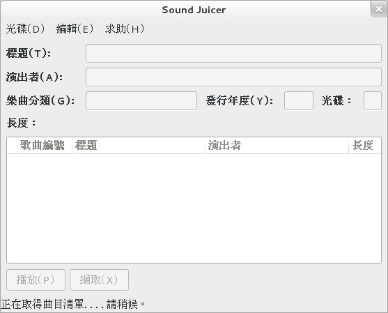
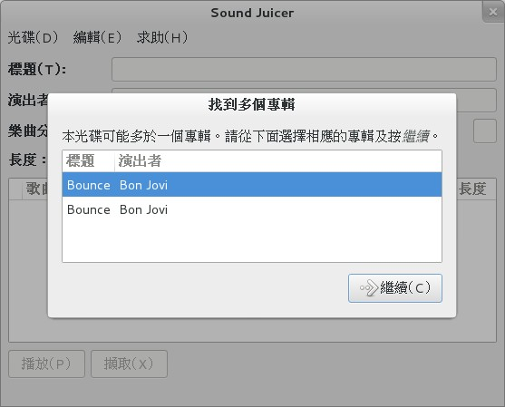
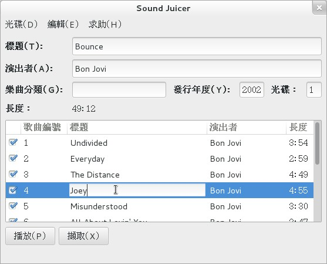
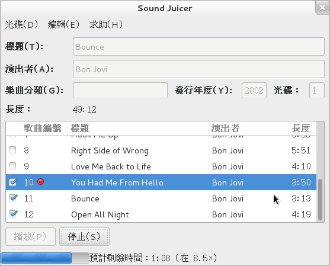
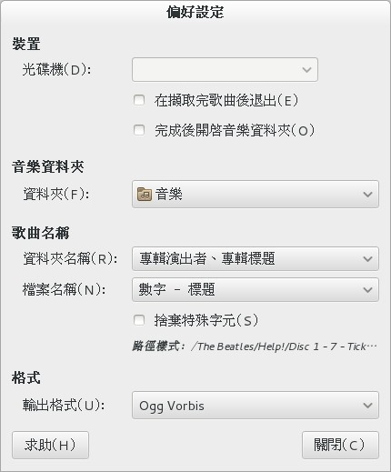
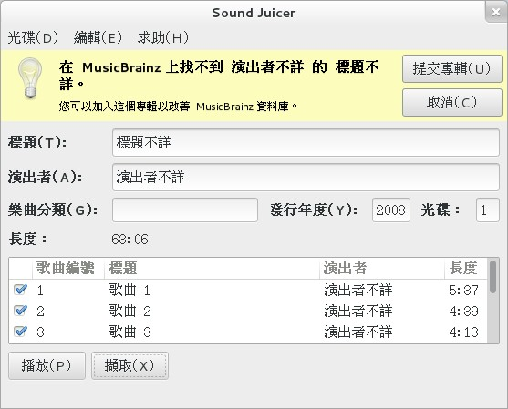

Sound Juicer－－從 CD 中擷取音樂

軟體名稱: Sound Juicer
介紹版本: 3.5.0
官網: https://burtonini.com/blog/computers/sound-juicer
授權: GPL-2.0+
Sound Juicer 是一款極其簡單易用的 CD 音樂擷取軟體。
它可以擷取 CD 中的音樂將其轉為 mp3、ogg、mp4、flac 等格式，並從線上資料庫 (MusicBrainz) 中取得專輯名、歌曲名、歌手是誰等資料，並藉此自動指定檔名與 metadata－－如果抓不到資料，或是線上資料庫中的資料您不甚滿意，也可以手動指定檔案相關訊息。
安裝
Sound Juicer 是 Linux 專用的。
它是 Gnome 的附屬計劃，發展年份也相當長，因此相當在 Linux 下很好裝。Linux 用戶請直接用各自的包管理系統來安裝它就可以了。
使用方法
Sound Juicer 用法非常簡單，連阿嬤也能學。說明如下：
1. 把 CD 塞進光碟機，啟動軟體（沒放 CD 的話軟體是沒法啟動的），接著 Sound Juicer 就會自動抓取網路上的資料，產生檔名列表……到此為止一切都是全自動的。

▲ 圖1：Sound Juicer 啟動畫面

▲ 圖2：CD 選擇畫面：因為 MusicBrainz 是採用多人協力製作的方式來收集 Metadata，有時會遇到資料重複的問題，這時就隨便選一個吧。

▲ 圖3：從遠端抓到資料之後，可以進行更動。
2. 如果您覺得下載的資料內容不對，這時可以藉機更動它（如上圖所示）。然後按下「擷取」按鈕來擷取。

▲ 圖4：開始擷取，一張 CD 費時約在 5 分鐘上下。
這樣就完成了。您所擷取的音樂檔案將會被直接放到「音樂資料夾」下。而音樂資料夾的具體位置為何，則可在「編輯」→「偏好設定」中看到。

▲ 圖5：設定畫面。非常地乾淨清爽，可以有效避免使用者的密集恐懼症，有益身心健康……當然對狂熱者來說十分貧乏那也沒錯啦。
設定項目一如上圖所示。就算您會介意 kbps 或採樣率等東西，Sound Juicer 也不會允許您改動這些。簡單易用就是她的特徵。
用預設的 OGG 格式輸出（看起來是 112 kbps，OGG Q3 音質），每個檔案大概都在 3 ~ 4 MB 之間，尺寸算是容易管理的，智慧手機塞個幾百首完全沒問題。音質方面，在下是聽不出有什麼不好啦……不過我是有名的音癡，大概沒什麼發言權吧？各位還是自行試試感覺一下最準了。
抓不到 Metadata 時
MusicBrainz 有時會出現資料找不到的問題，如下：

▲ 圖6：當抓不到資料時就會出現這樣的畫面……btw，我這張片子是范曉萱 1996 年時《小魔女的魔法書》第一集。真是懷念……
這時唯一的方法就是手動輸入歌名與唱片名。反正唱片一定就在手邊，這就輸入一下。
Sound Juicer 的輸入介面算蠻好用的，沒有什麼需要重複輸入的地方，花幾分鐘就能全部輸入完成。
如果您更有心的話，還可以按上面的「提交專輯」按鈕去幫 MusicBrainz 更新資料庫。MusicBrainz 相當開放，核心資料直接採用 CC0（也就是 Public Domain）授權釋出，還允許任何人直接把整個 Metadata 資料庫下載走。和維基百科的發展方向差不多，個人認為相當值得投資。
關於如何幫 MusicBrainz 更新比較難講，針對不同的更新目標方法也有些差異……反正您按那個按鈕後，就會有訊息逐步引導您完成您想要的工作（說明為英文）。
此處強調一下，在 MusicBrainz 上輸入專輯訊息時不用怕輸入格式錯誤。當您搞錯時會有其他熱心貢獻者來主動幫忙修正。我早先上傳了十張唱片的資料，結果第二天就收到快二十次修正訊息，有點慚愧但也相當放心！那就輕鬆地進行吧。
註一：Sound Juicer 的官網在 2.28.1 後就沒更新了。要看最新訊息直接到 Gnome wiki 的 Sound Juicer 頁面找還比較快，見：https://wiki.gnome.org/SoundJuicer